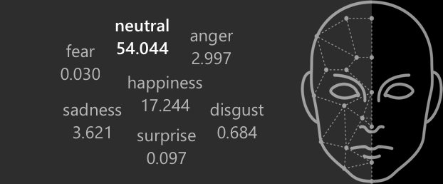
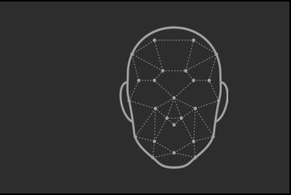
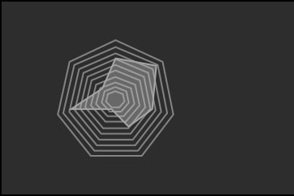
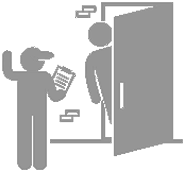
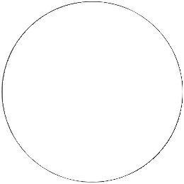
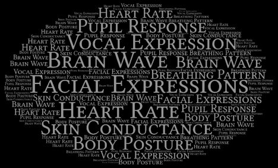
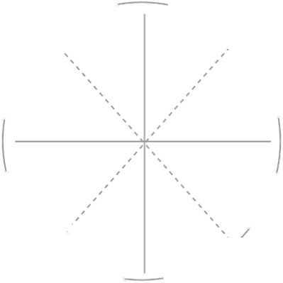

Summary

Emoi is an intelligent, non-intrusive way to solicit your user’sfeedback. It helps one identify the details that you, as acompany, product designer or user researcher, may beseeking, but without explicit questioning (through surveys orquestionnaires).
Emoi aims to quantify the qualitative aspects of customer and user research, allowing it to act asa proxy for observations that are considered vague and subjective otherwise. This quantificationwill not only facilitate objective decisions, but also prove to be the evidence when researcherspropose feature improvements to engineering and management teams.


It then analyzes these reactions to infer user’semotional state and visualizes it into a dynamicinteractive representation.
The system observes the user’s physiology, whileshe is immersed in an experience, capturing finedetails of her natural reactions.
As much tiring it is for the researchers to get accurate feedback, it is more so is for the customers, since the currentpractices warrants them to take time off of their actual priorities and go out of their way fulfill the feedback needs.
Because honestly, those awe-filled eyes when you feel inspired,that nose twitch when you cringe, and that smirk when you’retrying hard not to laugh, has a lot more to say than any 10question page can handle.
Have you ever..

walked out of an event,completely in awe, only to beforced out of your bubble by avolunteer, standing next to thedoor, holding a bunch ofleaflets, requesting everyone forfeedback
Reluctantly, you take the leaflet,and start filling it out. Youmaybe still in the moment, butthe need to express your awe,or excitement on that scale of 5,dampens you a little.
You spend first couple minutesunderstanding the questions,the next couple on deciding inbetween a 4 and a 5, whilehoping for a 4.5.
And ultimately, frustrated, just filling in a vague number and walking out
hurriedly, because your daughter is waiting for you at home.
Problem Space

Over the years, asking people how they felt during an experience has not changedmuch, if at all. You are required to fill out a form, earlier on paper, now on theinternet, asking you to put a number on your feelings, often between 1 to 5.
NOT A PRIORITY
QUESTIONABLE SCALE
Your customers do not have much of anincentive to provide feedback. Besides,questionnaires forces people to takevaluable time out of their schedule
In current form, subtle humansentiments mostly get lost because wetry to map them on to an absolute scale
with no base line reference
This system,
however, has
some flaws
WARRANTS RECALL
SOCIETAL BIAS
As people share opinions, biasesmay creep in and one’s pristine
Since conducted after theexperience, it often requires users
impression may not remain so.Sometimes, it is the need to ‘fit in’, thatcauses people to produce an expectedreaction, as opposed to actual one.
to rely on memory for answering thequestions, & literature shows howmemory is not often our strongest suite.
So what if..
80% happy
What if people don’t explicitlyhave to give feedback, but couldlet us know how they feel simplythrough natural reactions?
What if we can capture theexperience in terms more relatablelike attention or affect or simply,happiness quotient?
Behind The Curtains

Most apparent way to judge how a person is feeling, is to observetheir reaction (both voluntary and involuntary). Literature suggestsmany ways in which a person’s affective state manifests itself
The processing can be seen
as simple 3 step approach
Capture
Process
Visualize

CAPTURE
Given the constraints on accessibility of technology, we decided to capture a person’s emotional state throughFacial Expressions and levels of arousal through Skin Conductance. We created two prototypes:
Skin Conductance
To Arousal
Facial Expression
to Emotion
Skin conductance is the phenomenon that theskin momentarily becomes a better conductorof electricity when physiologically arousingstimuli is encountered. Since fingertips areconsidered to be most sensitive to thismeasure, we used small bands that uses woreon their fingers. The users were then engagedin a video, while we captured the skinconductance values through the setup.
In a user’s setting, we capture their facialexpressions through video camera feed,which is then analysed to identify theaffective state of the user usingprobabilistic values for 8 basic emotions -Happy, Sad, Anger, Disgust, Contempt,Neutral, Surprise, Fear.
PROCESS

The data captured from theinput, either video or skinconductance feed, is analyzed inthe backend using MicrosoftCognitive Services APIs andAffectiva SDK.
The results received afteranalysis are further filtered andaggregated, so as to beadapted according to thecircumplex representation ofaffect
High Arousal
Tensed
Alert
Excited
Nervous
Elated
Stressed
Happy
Upset
Negative Affect
(Unpleasant)
Positive Affect
(Pleasant)
Sad
Content
Serene
Depressed
Relaxed
Calm
Bored
Low Arousal
Circumplex Model of Affect
VISUALIZE
The results are exposed through an Angular JS based web portal, showcasing real time affective responses of thecaptured input using various data visualization techniques. This enables the user to understand and approximatethe underlying human sentiments and make informed decisions based on this feedback.
Arousal vs Time graph,capturing how user’s level ofexcitement and engagementvaried over time.
On a time axis to understandhow the emotion distributionvaried over time
In a spider graph, capturing therelative difference in theindividual emotions
Applications
Professionals in UX industry can quantitatively evaluate the cognitive aspects of anexperience, which may often get lost in transcription. This enables them to back theirinsights with real-time data when proposing a feature improvement to engineering andmanagement teams.
UX Research
& User Testing
Video games warrant user engagement - which can be measured in terms of attentionspan, excitement levels and emotions. Emoi can not only be used during User and PlayTesting, but it can also be used to customise the game experience for players on the fly,while they are engaged in the game.
Video Games
Emoi can also be used to analyse the experience of various movie goers, particularly duringpre-screening phase, to understand how they were feeling while watching the movie. Thiscan provide interesting insights which can be fruitful in editing the movie further, beforeactual release.
Movies
Emoi can be used to understand the engagement levels of participants in an event/workshop, which in turn can inform the organisers about the the effectiveness of speakers.
Events
& Workshops
Emoi turn the table on feedback gathering process bytaking the onus of giving and collecting the correct inputoff the users and researchers, respectively, allowing themto be more natural and relaxed throughout the process.